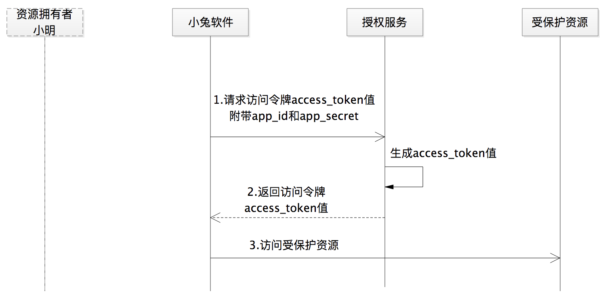
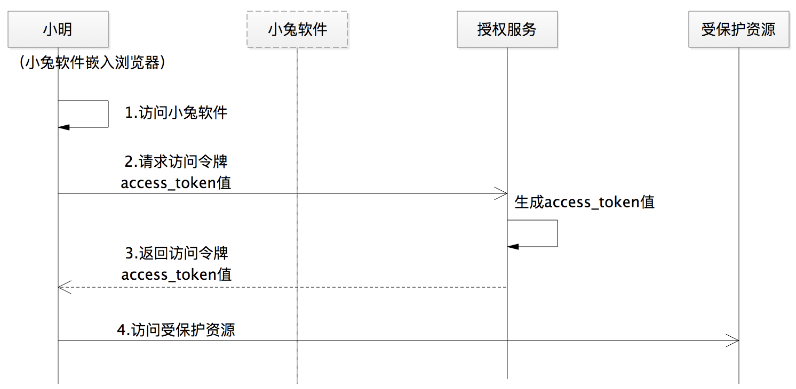
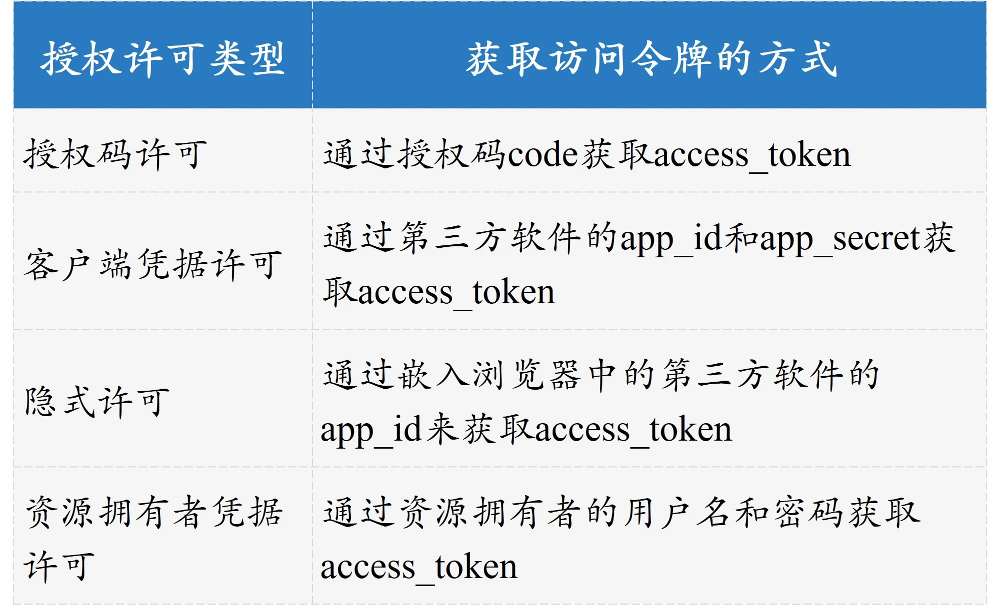

- 00 开篇词 为什么要学OAuth 2.0？.md
- 01 OAuth 2.0是要通过什么方式解决什么问题？.md
- 02 授权码许可类型中，为什么一定要有授权码？.md
- 03 授权服务：授权码和访问令牌的颁发流程是怎样的？.md
- 04 在OAuth 2.0中，如何使用JWT结构化令牌？.md
- 05 如何安全、快速地接入OAuth 2.0？.md
- 06 除了授权码许可类型，OAuth 2.0还支持什么授权流程？.md
- 07 如何在移动App中使用OAuth 2.0？.md
- 08 实践OAuth 2.0时，使用不当可能会导致哪些安全漏洞？.md
- 09 实战：利用OAuth 2.0实现一个OpenID Connect用户身份认证协议..md
- 10 串讲：OAuth 2.0的工作流程与安全问题.md
- 11 实战案例：使用Spring Security搭建一套基于JWT的OAuth 2.0架构.md
- 12 架构案例：基于OAuth 2.0_JWT的微服务参考架构.md
- 13 各大开放平台是如何使用OAuth 2.0的？.md
- 14 查漏补缺：OAuth 2.0 常见问题答疑.md
- 结束语 把学习当成一种习惯.md
06 除了授权码许可类型，OAuth 2.0还支持什么授权流程？
你好，我是王新栋。
在前面几讲学习授权码许可类型的原理与工作流程时，不知道你是不是一直有这样一个疑问：授权码许可的流程最完备、最安全没错儿，但它适合所有的授权场景吗？在有些场景下使用授权码许可授权，是不是过于复杂了，是不是根本就没必要这样？
比如，小兔打单软件是京东官方开发的一款软件，那么小明在使用小兔的时候，还需要小兔再走一遍授权码许可类型的流程吗？估计你也猜到答案了，肯定是不需要了。
你还记得授权码许可流程的特点么？它通过授权码这种临时的中间值，让小明这样的用户参与进来，从而让小兔软件和京东之间建立联系，进而让小兔代表小明去访问他在京东店铺的订单数据。
现在小兔被“招安”了，是京东自家的了，是被京东充分信任的，没有“第三方软件”的概念了。同时，小明也是京东店铺的商家，也就是说软件和用户都是京东的资产。这时，显然没有必要再使用授权码许可类型进行授权了。但是呢，小兔依然要通过互联网访问订单数据的 Web API，来提供为小明打单的功能。
于是，为了保护这些场景下的 Web API，又为了让 OAuth 2.0 更好地适应现实世界的更多场景，来解决比如上述小兔软件这样的案例，OAuth 2.0 体系中还提供了资源拥有者凭据许可类型。
资源拥有者凭据许可
从“资源拥有者凭据许可”这个命名上，你可能就已经理解它的含义了。没错，资源拥有者的凭据，就是用户的凭据，就是用户名和密码。可见，这是最糟糕的一种方式。那为什么 OAuth 2.0 还支持这种许可类型，而且编入了 OAuth 2.0 的规范呢？
我们先来思考一下。正如上面我提到的，小兔此时就是京东官方出品的一款软件，小明也是京东的用户，那么小明其实是可以使用用户名和密码来直接使用小兔这款软件的。原因很简单，那就是这里不再有“第三方”的概念了。
但是呢，如果每次小兔都是拿着小明的用户名和密码来通过调用 Web API 的方式，来访问小明店铺的订单数据，甚至还有商品信息等，在调用这么多 API 的情况下，无疑增加了用户名和密码等敏感信息的攻击面。
如果是使用了 token 来代替这些“满天飞”的敏感信息，不就能很大程度上保护敏感信息数据了吗？这样，小兔软件只需要使用一次用户名和密码数据来换回一个 token，进而通过 token 来访问小明店铺的数据，以后就不会再使用用户名和密码了。
接下来，我们一起看下这种许可类型的流程，如下图所示：

图1 资源拥有者凭据许可类型的流程
步骤 1：当用户访问第三方软件小兔时，会提示输入用户名和密码。索要用户名和密码，就是资源拥有者凭据许可类型的特点。
步骤 2：这里的 grant_type 的值为 password，告诉授权服务使用资源拥有者凭据许可凭据的方式去请求访问。
Map<String, String> params = new HashMap<String, String>();
params.put("grant_type","password");
params.put("app_id","APPIDTEST");
params.put("app_secret","APPSECRETTEST");
params.put("name","NAMETEST");
params.put("password","PASSWORDTEST");
String accessToken = HttpURLClient.doPost(oauthURl,HttpURLClient.mapToStr(params));
步骤 3：授权服务在验证用户名和密码之后，生成 access_token 的值并返回给第三方软件。
if("password".equals(grantType)){
String appSecret = request.getParameter("app_secret");
String username = request.getParameter("username");
String password = request.getParameter("password");
if(!"APPSECRETTEST".equals(appSecret)){
response.getWriter().write("app_secret is not available");
return;
}
if(!"USERNAMETEST".equals(username)){
response.getWriter().write("username is not available");
return;
}
if(!"PASSWORDTEST".equals(password)){
response.getWriter().write("password is not available");
return;
}
String accessToken = generateAccessToken(appId,"USERTEST");
response.getWriter().write(accessToken);
}
到了这里，你可以掌握到一个信息：如果软件是官方出品的，又要使用 OAuth 2.0 来保护我们的 Web API，那么你就可以使用小兔软件的做法，采用资源拥有者凭据许可类型。
无论是我们的架构、系统还是框架，都是致力于解决现实生产中的各种问题的。除了资源拥有者凭据许可类型外，OAuth 2.0 体系针对现实的环境还提供了客户端凭据许可和隐式许可类型。接下来，让我们继续看看这两种授权许可类型吧。
客户端凭据许可
如果没有明确的资源拥有者，换句话说就是，小兔软件访问了一个不需要用户小明授权的数据，比如获取京东 LOGO 的图片地址，这个 LOGO 信息不属于任何一个第三方用户，再比如其它类型的第三方软件来访问平台提供的省份信息，省份信息也不属于任何一个第三方用户。
此时，在授权流程中，就不再需要资源拥有者这个角色了。当然了，你也可以形象地理解为 “资源拥有者被塞进了第三方软件中” 或者 “第三方软件就是资源拥有者”。这种场景下的授权，便是客户端凭据许可，第三方软件可以直接使用注册时的 app_id 和 app_secret 来换回访问令牌 token 的值。
我们还是以小明使用小兔软件为例，来看下客户端凭据许可的整个授权流程，如下图所示：

图2 客户端凭据许可授权流程
另外一点呢，因为授权过程没有了资源拥有者小明的参与，小兔软件的后端服务可以随时发起 access_token 的请求，所以这种授权许可也不需要刷新令牌。
这样一来，客户端凭据许可类型的关键流程，就是以下两大步。
步骤 1：第三方软件小兔通过后端服务向授权服务发送请求，这里 grant_type 的值为 client_credentials，告诉授权服务要使用第三方软件凭据的方式去请求访问。
Map<String, String> params = new HashMap<String, String>();
params.put("grant_type","client_credentials");
params.put("app_id","APPIDTEST");
params.put("app_secret","APPSECRETTEST");
String accessToken = HttpURLClient.doPost(oauthURl,HttpURLClient.mapToStr(params));
步骤 2：在验证 app_id 和 app_secret 的合法性之后，生成 access_token 的值并返回。
String grantType = request.getParameter("grant_type");
String appId = request.getParameter("app_id");
if(!"APPIDTEST".equals(appId)){
response.getWriter().write("app_id is not available");
return;
}
if("client_credentials".equals(grantType)){
String appSecret = request.getParameter("app_secret");
if(!"APPSECRETTEST".equals(appSecret)){
response.getWriter().write("app_secret is not available");
return;
}
String accessToken = generateAccessToken(appId,"USERTEST");
response.getWriter().write(accessToken);
}
到这里，我们再小结下。在获取一种不属于任何一个第三方用户的数据时，并不需要类似小明这样的用户参与，此时便可以使用客户端凭据许可类型。
接下来，我们再一起看看今天要讲的最后一种授权许可类型，就是隐式许可类型。
隐式许可
让我们再想象一下，如果小明使用的小兔打单软件应用没有后端服务，就是在浏览器里面执行的，比如纯粹的 JavaScript 应用，应该如何使用 OAuth 2.0 呢？
其实，这种情况下的授权流程就可以使用隐式许可流程，可以理解为第三方软件小兔直接嵌入浏览器中了。
在这种情况下，小兔软件对于浏览器就没有任何保密的数据可以隐藏了，也不再需要应用密钥 app_secret 的值了，也不用再通过授权码 code 来换取访问令牌 access_token 的值了。因为使用授权码的目的之一，就是把浏览器和第三方软件的信息做一个隔离，确保浏览器看不到第三方软件最重要的访问令牌 access_token 的值。
因此，隐式许可授权流程的安全性会降低很多。在授权流程中，没有服务端的小兔软件相当于是嵌入到了浏览器中，访问浏览器的过程相当于接触了小兔软件的全部，因此我用虚线框来表示小兔软件，整个授权流程如下图所示：

图3 隐式许可授权流程
接下来，我使用 Servlet 的 Get 请求来模拟这个流程，一起看看相关的示例代码。
步骤 1：用户通过浏览器访问第三方软件小兔。此时，第三方软件小兔实际上是嵌入浏览器中执行的应用程序。
步骤 2：这个流程和授权码流程类似，只是需要特别注意一点，response_type 的值变成了 token，是要告诉授权服务直接返回 access_token 的值。随着我们后续的讲解，你会发现隐式许可流程是唯一在前端通信中要求返回 access_token 的流程。对，就这么 “大胆”，但 “不安全”。
Map<String, String> params = new HashMap<String, String>();
params.put("response_type","token");
params.put("redirect_uri","http://localhost:8080/AppServlet-ch02");
params.put("app_id","APPIDTEST");
String toOauthUrl = URLParamsUtil.appendParams(oauthUrl,params);
response.sendRedirect(toOauthUrl);
步骤 3：生成 acccess_token 的值，通过前端通信返回给第三方软件小兔。
String responseType = request.getParameter("response_type");
String redirectUri =request.getParameter("redirect_uri");
String appId = request.getParameter("app_id");
if(!"APPIDTEST".equals(appId)){
return;
}
if("token".equals(responseType)){
String accessToken = generateAccessToken(appId,"USERTEST");
Map<String, String> params = new HashMap<String, String>();
params.put("redirect_uri",redirectUri);
params.put("access_token",accessToken);
String toAppUrl = URLParamsUtil.appendParams(redirectUri,params);
response.sendRedirect(toAppUrl);
}
如果你的软件就是直接嵌入到了浏览器中运行，而且还没有服务端的参与，并且还想使用 OAuth 2.0 流程的话，也就是像上面我说的小兔这个例子，那么便可以直接使用隐式许可类型了。
如何选择？
现在，我们已经理解了 OAuth 2.0 的 4 种授权许可类型的原理与流程。那么，我们应该如何选择到底使用哪种授权许可类型呢？
这里，我给你的建议是，在对接 OAuth 2.0 的时候先考虑授权码许可类型，其次再结合现实生产环境来选择：
如果小兔软件是官方出品，那么可以直接使用资源拥有者凭据许可；
如果小兔软件就是只嵌入到浏览器端的应用且没有服务端，那就只能选择隐式许可；
如果小兔软件获取的信息不属于任何一个第三方用户，那可以直接使用客户端凭据许可类型。
总结
好了，我们马上要结束这篇文章了，在这之前呢，我们一直讲的是授权码许可类型，你已经知道了这是一种流程最完备、安全性最高的授权许可流程。不过呢，现实世界总是有各种各样的变化，OAuth 2.0 也要适应这样的变化，所以才有了我们今天讲的另外这三种许可类型。同时，关于如何来选择使用这些许可类型，我前面也给了大家一个建议。
加上前面我们讲的授权码许可类型，我们一共讲了 4 种授权许可类型，它们最显著的区别就是获取访问令牌 access_token 的方式不同。最后，我通过一张表格来对比下：

图4 OAuth 2.0的4种授权许可类型对比
除了上面这张表格所展现的 4 种授权许可类型的区别之外，我希望你还能记住以下两点。
所有的授权许可类型中，授权码许可类型的安全性是最高的。因此，只要具备使用授权码许可类型的条件，我们一定要首先授权码许可类型。
所有的授权许可类型都是为了解决现实中的实际问题，因此我们还要结合实际的生产环境，在保障安全性的前提下选择最合适的授权许可类型，比如使用客户端凭据许可类型的小兔软件就是一个案例。
我把今天用到的代码放到了 GitHub 上，你可以点击这个链接查看。
思考题
如果受限于应用特性所在的环境，比如在没有浏览器参与的情况下，我们应该如何选择授权许可类型呢，还可以使用授权码许可流程吗？
欢迎你在留言区分享你的观点，也欢迎你把今天的内容分享给其他朋友，我们一起交流。
© 2019 - 2023 Liangliang Lee. Powered by Vert.x and hexo-theme-book.